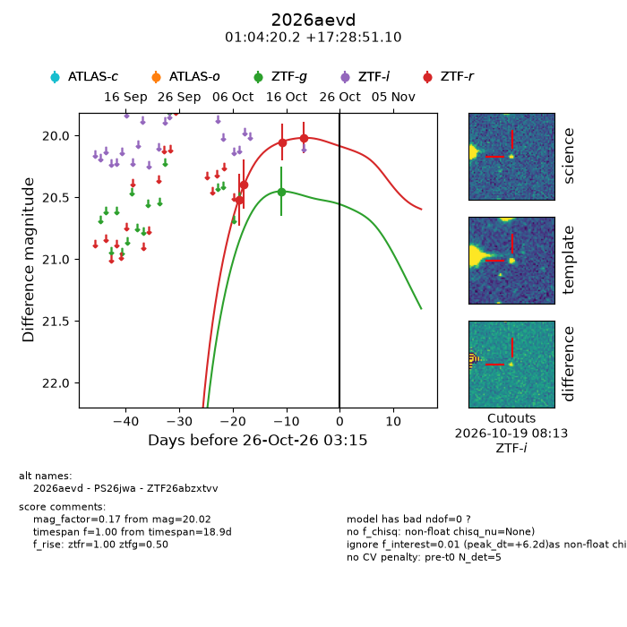
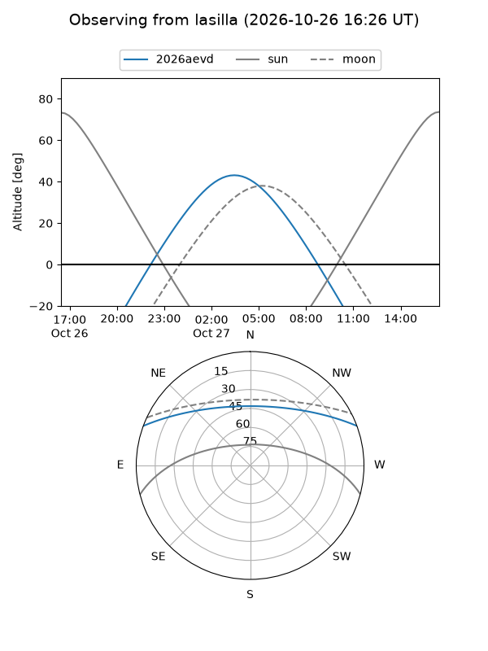
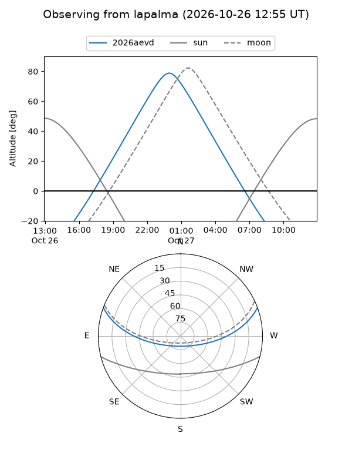
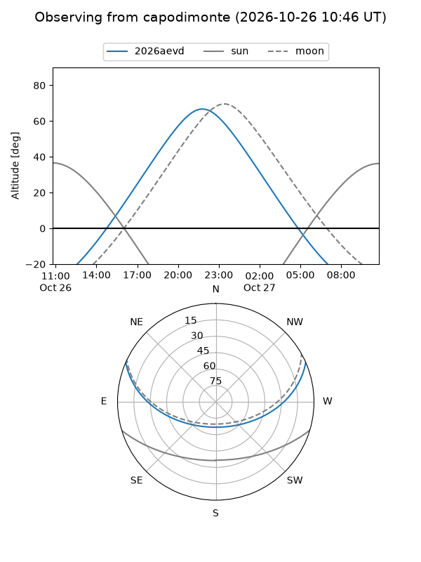
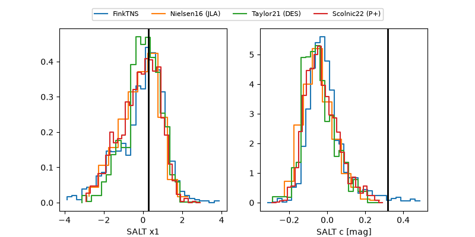

2026aevd
Target 2026aevd at 2026-10-26 14:56
Aliases and brokers:
FINK-ZTF: ztf.fink-portal.org/ZTF26abzxtvv
Lasair-ZTF: lasair-ztf.lsst.ac.uk/objects/ZTF26abzxtvv
ALeRCE-ZTF: alerce.online/object/ZTF26abzxtvv
YSE-PZ: ziggy.ucolick.org/yse/transient_detail/2026aevd
TNS name: wis-tns.org/object/2026aevd
Direct TNS query: direct search
alt names
ZTF26abzxtvv (ztf,fink_ztf)
2026aevd (tns,yse)
PS26jwa (panstarrs)
Coordinates:
equatorial (ra, dec) = 16.0843,+17.48086
equatorial (HMS+DMS) = 01:04:20.24,+17:28:51.10
galactic (l, b) = (127.3054,-45.28132)
Flags:
peak dt: +6.7
Photometry:
last ztfg=20.45, ztfr=20.02
1 ztfg, 4 ztfr detections
Lightcurve

Visibility



Additional plots
